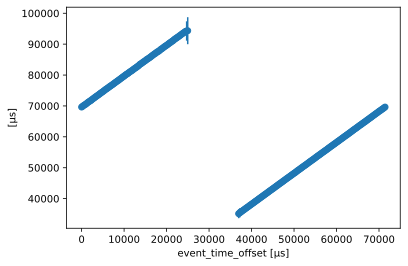
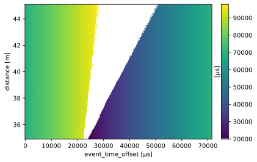

Create a TOF lookup table for ESTIA#
This notebook recreates the TOF lookup table that is used to compute time-of-flight from time-of-arrival for the ESTIA instrument.
To reproduce the lookup table you will need to provide some instrument parameters like pulse stride and chopper position.
[1]:
#%pip install tof
[2]:
#%matplotlib ipympl
import scipp as sc
import scipp.constants
from ess.reduce import time_of_flight
from ess.reduce.nexus.types import AnyRun
from scippneutron.chopper import DiskChopper
[3]:
# Parameters from the ESTIA McStas file:
# https://git.esss.dk/dmsc-instrumentmodels/estia/-/blob/main/mcstas-master/simulation/Estia_baseline.instr
min_wavelength = sc.scalar(3.75, unit='angstrom')
chopper_position = sc.scalar(10.895, unit='m')
max_velocity = (sc.constants.h / sc.constants.m_n / min_wavelength).to(unit='m/s')
delay = chopper_position / max_velocity
pulse_stride = 1
frequency = -sc.scalar(14., unit='Hz') / pulse_stride
disk_choppers = {
"fc": DiskChopper(
frequency=frequency,
beam_position=sc.scalar(0.0, unit="deg"),
phase=delay * frequency * sc.scalar(360, unit="deg"),
axle_position=sc.vector(value=[0, 0., chopper_position.value], unit=chopper_position.unit),
slit_begin=sc.array(
dims=["cutout"],
values=[
0.
],
unit="deg",
),
slit_end=sc.array(
dims=["cutout"],
values=[
98.
],
unit="deg",
),
),
}
disk_choppers['fc']
[3]:
- axle_positionscippVariable()vector3m[ 0. 0. 10.895]
- frequencyscippVariable()float64Hz-14.0
- beam_positionscippVariable()float64deg0.0
- phasescippVariable()float64deg-52.05099341448456
- slit_beginscippVariable(cutout: 1)float64deg0.0
- slit_endscippVariable(cutout: 1)float64deg98.0
- slit_heightNoneType()None
- radiusNoneType()None
[4]:
wf = time_of_flight.TofLookupTableWorkflow()
wf[time_of_flight.LtotalRange] = sc.scalar(35., unit="m"), sc.scalar(45.0, unit="m")
wf[time_of_flight.NumberOfSimulatedNeutrons] = 5000_000
wf[time_of_flight.SourcePosition] = sc.vector([0, 0, 0], unit='m')
wf[time_of_flight.DiskChoppers[AnyRun]] = disk_choppers
wf[time_of_flight.DistanceResolution] = sc.scalar(0.05, unit="m")
wf[time_of_flight.TimeResolution] = sc.scalar(250.0, unit='us')
wf[time_of_flight.LookupTableRelativeErrorThreshold] = 0.06
wf[time_of_flight.PulsePeriod] = 1.0 / sc.scalar(14.0, unit="Hz")
wf[time_of_flight.PulseStride] = pulse_stride
wf[time_of_flight.PulseStrideOffset] = 0
[5]:
%%time
table = wf.compute(time_of_flight.TimeOfFlightLookupTable)
table
Downloading file 'ess/ess.h5' from 'https://github.com/scipp/tof-sources/raw/refs/heads/main/1/ess/ess.h5' to '/home/runner/.cache/tof'.
CPU times: user 17.6 s, sys: 5.77 s, total: 23.4 s
Wall time: 7.26 s
[5]:
TofLookupTable(array=<scipp.DataArray>
Dimensions: Sizes[distance:205, event_time_offset:287, ]
Coordinates:
* distance float64 [m] (distance) [34.9, 34.95, ..., 45.05, 45.1]
* event_time_offset float64 [µs] (event_time_offset) [0, 249.75, ..., 71178.8, 71428.6]
Data:
float64 [µs] (distance, event_time_offset) [69656.5, 69951.6, ..., 69425.8, 69611.1] [788662, 814550, ..., 772392, 768148]
, pulse_period=<scipp.Variable> () float64 [µs] 71428.6, pulse_stride=1, distance_resolution=<scipp.Variable> () float64 [m] 0.05, time_resolution=<scipp.Variable> () float64 [µs] 249.75, error_threshold=0.06, choppers=DataGroup(sizes={'cutout': 1}, keys=[
fc: DataGroup(8, {'cutout': 1}),
]))
[6]:
# This is what the relationship between time-of-arrival and time-of-flight looks like at 40m (at the detector).
table.array['distance', 100].plot()
[6]:

[7]:
table.plot()
[7]:

[8]:
table.save_hdf5(f'estia-tof-lookup-table-pulse-stride-{pulse_stride}.h5')
Writing type '<class 'NoneType'>' to HDF5 not implemented, skipping.
Writing type '<class 'NoneType'>' to HDF5 not implemented, skipping.